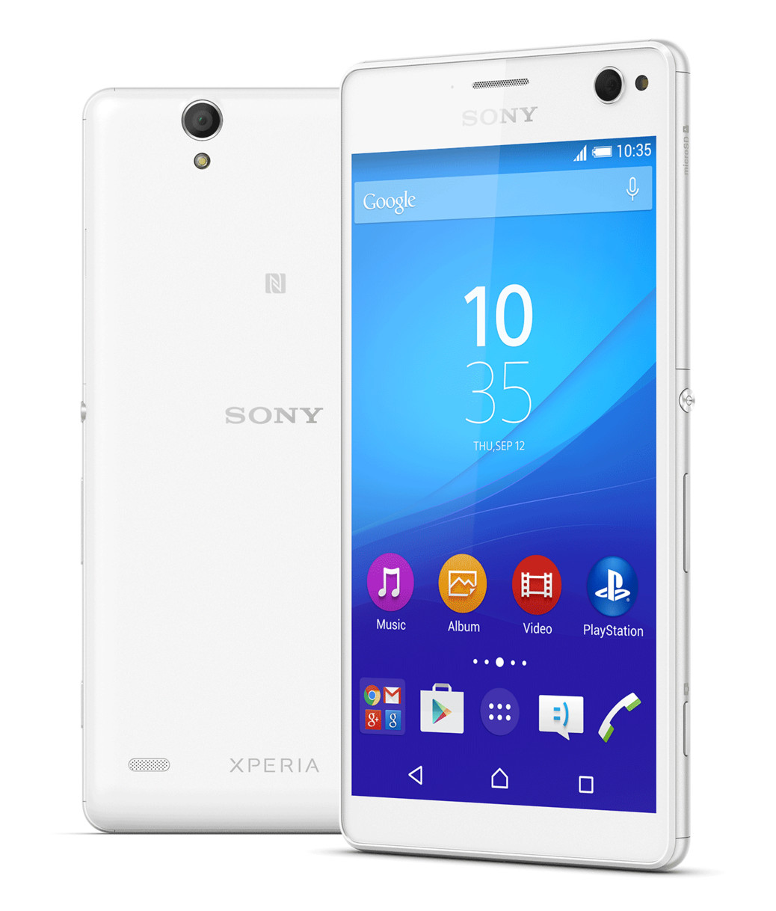

Sony Xperia M4 Aqua (sony-tulip)
|
 Sony Xperia M4 Aqua | |
| Manufacturer | Sony |
|---|---|
| Name | Xperia M4 Aqua |
| Codename | sony-tulip |
| Released | 2015 |
| Category | testing |
| Original software | Android 5.0 further updated to 6.0 |
| Hardware | |
| Chipset |
Qualcomm MSM8936 Snapdragon 610 Qualcomm MSM8939 Snapdragon 615 |
| CPU | 8x Cortex-A53, 4x 1,5Ghz (big cluster) + 4x 1Ghz (LITTLE cluster) (clock speeds may vary slightly) |
| GPU | Adreno 405 |
| Display | 720 x 1280 LED Triluminos 294ppi 5" |
| Storage | 8/16 GB (refer to the model list) |
| Memory | 2 GB |
| Architecture | aarch64 |
{kind=link}
| USB Networking |
Works
|
|---|---|
| Flashing |
Works
|
| Touchscreen |
Works
|
| Display | |
| WiFi | |
| FDE | |
| Mainline | |
| Battery | |
| 3D Acceleration | |
| Audio | |
| Bluetooth | |
| Camera |
Unavailable
|
| GPS | |
| Mobile data | |
| SMS | |
| Calls | |
| USB OTG | |
| NFC | |
| Accelerometer | |
|---|---|
| Magnetometer | |
| Ambient Light | |
| Proximity | |
| Hall Effect | |
| Ir TX | |
|---|---|
| TrustZone | |
Contents
Contributors
- Konrad Dybcio (@konradybcio) - porting
- Patrick Hope (@Pachops) - testing
- Pavel Dubrova (@Cubbins) - cleaning up kernel, doing A LOT for this device kernel-wise
Maintainer(s)
- Konrad Dybcio (@konradybcio)
How to enter flash mode
With device powered off, hold [VOLUME +] and plug USB cable in. Device's LED will turn blue, meaning it has entered fastboot mode. You will need an unlocked bootloader. To unlock it follow the official guide by Sony.
Model list
E2303 (European) - 8GB storage, LTE
E2306 - 16GB storage, LTE
E2312 - 8GB storage, 3G, Dual-SIM
E2333 - 16GB storage, LTE, Dual-SIM
E2353 - 8GB storage, LTE
E2363 - 16GB storage, LTE, Dual-SIM
Additional notes
- Camera will NOT work for now, it's broken kernel-side.
- This device has not been made by Sony, it's been manufactured by FIH hence kernel needed (and still needs some) cleanup
- There are a lot, and by that i mean a LOT of variants of this device, varying mainly by baseband and storage size
- In Pavel's kernel_kanuti repo you can find some work on caf's 4.9, 4.4, and 3.18 kernels, the higher the version the less things will work, but hey, there is hope
- The device can probably be mainlined since 8936/8939 is a 8916-class soc
- If camera ever gets fixed, it will need Sony's proprietary blobs to run
Installation
Fastboot and TWRP zips work fine.
See also
- pmaports!77 Initial merge request
- Device package
- Kernel package